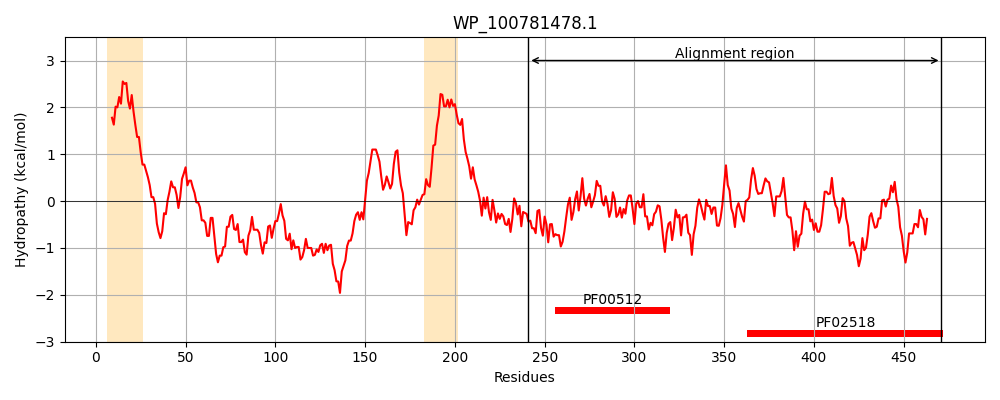
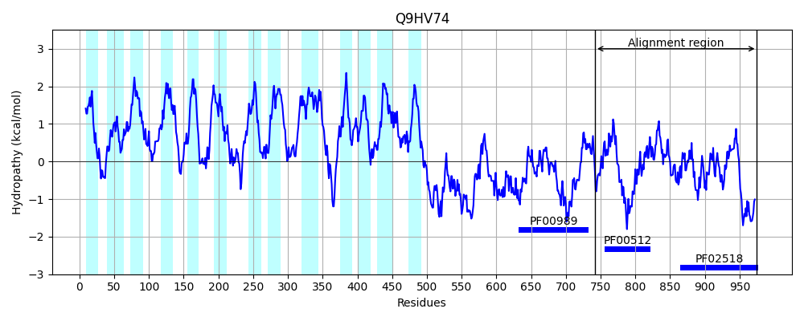
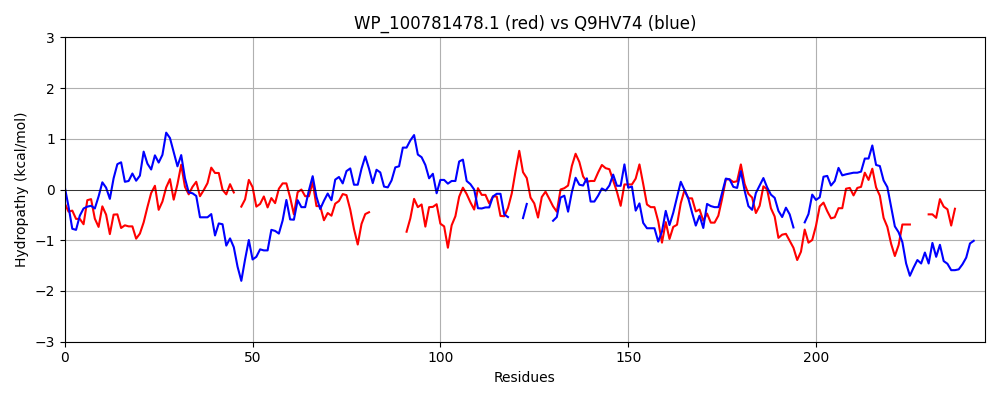

Hit Accession: Q9HV74
Hit TCID: 2.A.21.9.1
Hit Description: gnl|BL_ORD_ID|18210 gnl|TC-DB|Q9HV74|2.A.21.9.1 Probable two-component sensor (CbrA) - Pseudomonas aeruginosa.
Mach Len: 245
e:0.000000
Query TMS Count : 2
Hit TMS Count: 13
TMS-Overlap Score: 0.000000
Predicted Substrates:None
BLAST Alignment:
Score: 221 , Bit scores: 89 bits, E-value: 6.0e-19, Alignment length: 245, Percentage identity: 31
Query: 241 QALESMRVKLEGKNAIENYVYDLTHELKSPLAAIRGAAEILREGPP-PAVAARFTDNILAQNTRMQLLVERLLHQARLESRL---------EIKPQPVSIDALYQRLTEERDIALAAKAITLRWRESGMLVNGDGELLAQALGNLLDNAIDFTPKGGEIALAAEKRNEEVQLSVIDNGCGIPDYALERIFERFYSLPREDGHKSSGLGLAFVREVARLHHGDINLH----NRPEGGVVATLRLHR 471
Q LE V E +I + HE+ +P+ I A+ LRE ++ IL Q R+ +V+ L+ A S L E+ + + + +L +R E L A W V GD + LAQ L NLL NA D +P GG I + +E V L V D G GIP ++++FE F++ +D K +GLGLA V + H+G I + ++ EGG + L R
Sbjct: 742 QLLEDKLVHSERLASIGRLAAGVAHEIGNPITGIACLAQNLREEREGDGELTEISEQILDQTKRVSRIVQSLMSFAHSGSHLQALEPVCLSEVAQEAIGLLSLNRRSVEVEFFNLCDPA---HW------VEGDSQRLAQVLINLLSNARDASPPGGAIRVRSEASEHTVDLVVEDEGSGIPKAIMDQLFEPFFT--TKDPGKGTGLGLALVYSIVEEHYGQITIESPTDHQREGGTRFRVTLPR 975 | Protein Hydropathy Plots: |
|---|
|  |  |
Pairwise Alignment-Hydropathy Plot:
|
|---|
|  |